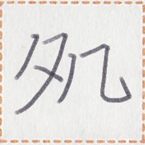
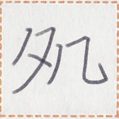

← Previous
Index
Next →
English: Mr. Ark knows how to speak many languages.
Chinese: 书先生会讲很多种语言。
Chinese (pinyin): Shū xiānsheng huì jiǎng hěn duō zhǒng yǔyán.
Pekzep (latin transcription): ak1 xizi py zep1 taun1 nim2 a zep1.
Pekzep (hanzi transcription): 書xizi力言多族之言。
Pekzep (linzklā):  



Analysis: